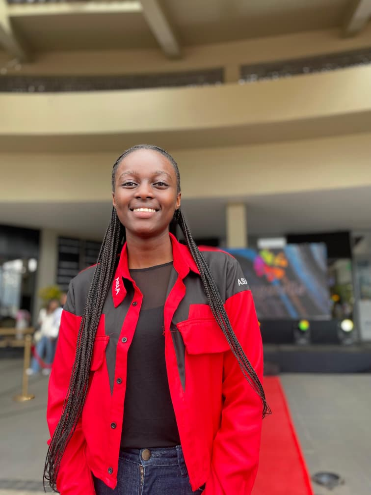

About Me
I am a software engineering student at African Leadership College of Higher Education. I learn by building real systems from intranet setups and Linux-based services to backend applications and accessible software products. I value discipline, structured problem-solving, and long-term thinking over shortcuts or superficial solutions.
Impact-Driven Work
My work is guided by a simple principle: to understand how software behaves in real environments and how it can solve practical problems. This approach drives my projects, whether configuring networked services, debugging system issues, or designing scalable offline tools like LearnPod.
Beyond technical work, I am committed to using my skills to create systems that are inclusive, reliable, and human-centered. I believe software engineering is not just about writing code but about building solutions that last, serve, and make an impact.
Mission Statement
To empower African youth in rural public schools with technology that unlocks their potential, transforms their talents into tangible opportunities, and equips them to become changemakers who uplift their communities and shape Africa's future.

Lisette Mukiza
Software Engineering Student
Machine Learning